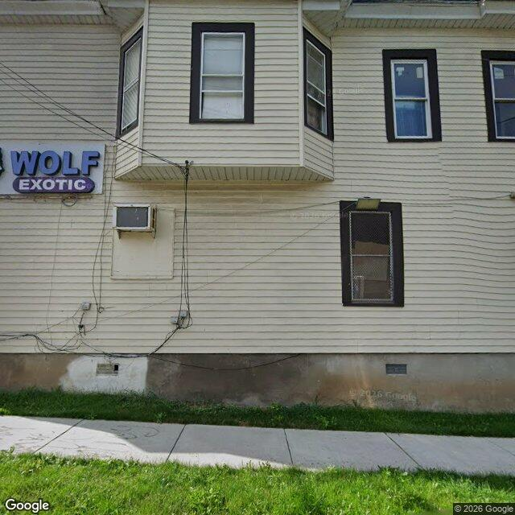

Property entry
339 Wolf St & Carbon St
Published 2026-11-04T10:05:11+00:00
Parcel key: 002-04-060

City records
Matches use parcel IDs or normalized property addresses. Nearby properties are not treated as matches. Records may include historical or closed cases; check each record's status and dates. Publication dates are not source-data dates.
Vacant properties 1
- Latitude
- 43.07211415
- Longitude
- -76.16385333
- ObjectId
- 633
- Owner
- Wolf Street Properties LLC
- OwnerAddress
- 7002 Lehman St Clay, NY 13041
- PropertyAddress
- 339 Wolf St & Carbon St
Records refreshed 2026-11-04.
Rental registry 0
No matches stored for this feed. The feed or address matching may be incomplete; this is not confirmation that no records exist.
Records refreshed 2026-11-04.
Code violations 64
- Latitude
- 43.07211415
- Longitude
- -76.16385333
- Neighborhood
- Washington Square
- ObjectId
- 99682
- SBL
- 002.-04-06.0
- Vacant
- Commercial
- Latitude
- 43.07211415
- Longitude
- -76.16385333
- Neighborhood
- Washington Square
- ObjectId
- 99686
- SBL
- 002.-04-06.0
- Vacant
- Commercial
- Latitude
- 43.07211415
- Longitude
- -76.16385333
- Neighborhood
- Washington Square
- ObjectId
- 99689
- SBL
- 002.-04-06.0
- Vacant
- Commercial
- Latitude
- 43.07211415
- Longitude
- -76.16385333
- Neighborhood
- Washington Square
- ObjectId
- 99694
- SBL
- 002.-04-06.0
- Vacant
- Commercial
Records refreshed 2026-11-04.
Unfit properties 0
No matches stored for this feed. The feed or address matching may be incomplete; this is not confirmation that no records exist.
Records refreshed 2026-11-04.
AI image observations (unverified)
These observations are generated from an image, not an inspection or an official code finding. No human verification is recorded here.
Image capture date: Not recorded. The entry publication date does not establish the age of the image.
Automated image description
The image shows a portion of a light-sided mixed-use building facade featuring commercial signage, ground-floor window security grating, and hanging exterior utility wiring.
Property type guess: mixed_use
Visible conditions
- Commercial signage labeled 'WOLF EXOTIC' attached to the left side of the facade.
- Vinyl siding appears mostly intact across upper and lower levels.
- Ground-floor window fitted with a metal security screen or grate.
- Tangled or loose utility wiring hanging along the lower wall near an air conditioning unit.
- Concrete foundation shows minor surface staining and patching.
Condition scores
- Roof
- not_visible
- Siding Or Facade
- fair
- Windows Doors
- good
- Porch Or Entry
- not_visible
- Yard Or Lot
- fair
- Trash Debris
- none_visible
- Vegetation Overgrowth
- none_visible
Visible flags
- Boarded Windows Or Doors
- no
- Fire Damage Visible
- no
- Structural Damage Visible
- no
- Vacancy Signs Visible
- no
- Active Construction Visible
- no
Possible image-only flags
- Dangling and unsecured exterior utility wiring along the wall.
AI review boxes
- Loose exterior wiring: Multiple unsecured exterior wires dangling along the side facade.
Review reasons
- Possible image-only issue
Image quality
- Available
- True
- Bytes
- 82918
- Needs Rerun
- False
['View is limited to a single side facade along the sidewalk.', 'The primary building entrance and roof are not visible from this camera angle.']
ACS tract context
Census Tract 2; Onondaga County; New York
- Total population
- 3511
- Median household income
- 51848
- Poverty rate
- 28.1
- Housing units
- 1686
- Vacancy rate
- 14.7
- Renter-occupied share
- 50.1
- Median gross rent
- 146700
OpenStreetMap nearby
60 meter search radius
Nearby map data is temporarily unavailable. This does not mean there are no mapped features.